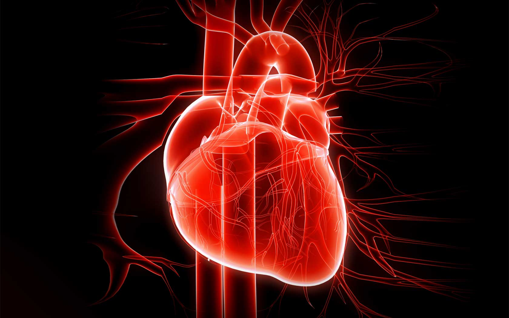
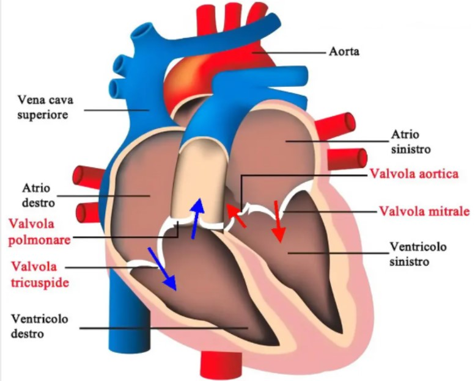

Sistole, diastole e percorso del sangue attraverso atri e ventricoli
Il cuore è l'organo centrale del sistema cardiovascolare. La dissezione del cuore di suino ci permette di osservare direttamente il funzionamento delle quattro cavità cardiache e di collegare queste osservazioni al cuore umano.
Il cuore pompa il sangue in soli 0,8 secondi, alternando due fasi principali:
Le valvole atrioventricolari e semilunari garantiscono che il sangue scorra in un’unica direzione. Le valvole semilunari si aprono solo quando la pressione interna del ventricolo raggiunge un valore sufficiente.
Ci ha colpito che le valvole funzionano senza energia attiva, affidandosi solo alla pressione del sangue!
Parete sottile, pompa sangue solo verso i polmoni. Cavità più ampia e irregolare.
Parete spessa, pompa sangue in tutto il corpo. Cavità più compatta e tondeggiante.
Questo concetto si collega anche allo studio dell’ipertensione nel ventricolo sinistro umano e alla comprensione delle malattie cardiovascolari. La dissezione del cuore di suino permette di vedere direttamente queste differenze strutturali e funzionali.